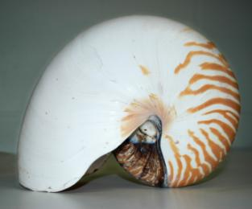
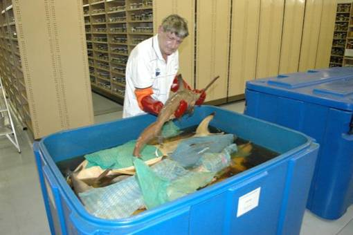
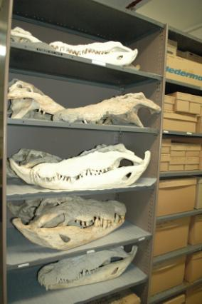
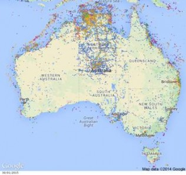

Welcome the Atlas of Living Australia
ALA welcomes new data from Museum and Art Gallery of the Northern Territory
- By Nicholas Cerminara
- September 30, 2014
- 23 Comments
- Tags: bootstrap css
The Museum and Art Gallery of the Northern Territory (MAGNT) has more than quadrupled their specimen data that is freely available online through the Atlas of Living Australia (ALA). Newly available data has increased the number of accessible MAGNT records from around 53,000 to more than 220,000.
The new records include mammals, reptiles, amphibians, birds, fish, and for the first time data from MAGNT’s marine invertebrates collections.
Data from specimens, such as this beautiful Nautilus shell, found in the collections of the Museum and Art Gallery of the Northern Territory, are now available via the ALA website. Credit: Gavin Dally, MAGNT
MAGNT’s marine invertebrates collections include specimens collected over more than 40 years from Northern Australian waters, an area that is environmentally significant as a transition zone between biodiversity regions. Marine environments, such as this, remain one of the most challenging areas for biodiversity researchers, due to their size, scale and inaccessibility. Therefore, making data from these collections of molluscs, marine worms, corals, crustaceans and sponges available online will be a great help to the marine research community.
MAGNT staff member, Rex Williams, examines a Hammerhead shark specimen from their natural history collection. Credit: MAGNT
“These quantum leaps in the accessibility of information on Australia’s rich animal life are very exciting. They fill huge gaps in our knowledge of species right around Australia, and open up this data for use by researchers throughout Australia and around the world,” said Dr Mark Norman, Chair of the Council of Heads of Australian Faunal Collections.
As well as making these collections more accessible and discoverable, getting them online makes it possible for researchers to explore and analyse the information they hold using sophisticated digital tools. The ALA Spatial Portal allows specimen records from Australia’s museums and other natural history collections to be analysed in conjunction with contextual and environmental habitat information, including an array of marine data.
”Making this data accessible allows us to work out where species live, how they’re changing over time, what’s happening with marine pests, and what impacts climate change is having,” explained Dr Norman.
They’re some toothy grins! It’s probably not surprising that MAGNT has an impressive collection of crocodile specimens, and now you can access the data via the ALA. Credit: Gavin Dally, MAGNT
Australia’s museums house millions of natural history specimens, and making these collections digitally accessible is an ongoing process. The collections continue to grow, as scientists carry on exploring our environment, and museum staff and volunteers work tirelessly to document, database and get those specimen data online. This latest update from MAGNT means that the majority of their digitised specimen data can now be found online; more data will become available with further regular updates.

These maps demonstrate MAGNT’s species records available on the ALA prior to (above) and following (below) the recent data upload. All those extra records are great news, particularly for anyone interested in species found in and around the Northern Territory!
From around 53,000 to more than 220,000 data entries from MAGNT
- Related items: MAGNT NT Museum and Art Gallery